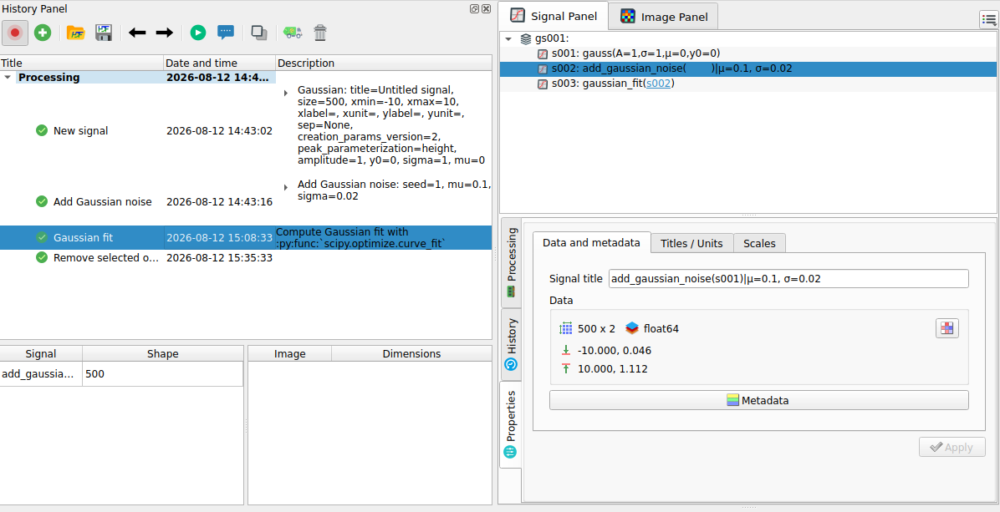

Recording and replaying a processing chain#
This tutorial shows how to use the History Panel to make a processing workflow reproducible:
Record a complete processing chain on a test signal
Inspect the recorded actions and their workspace state
Replay the chain, and replay it step-by-step with modified parameters
Duplicate a session to compare two processing variants
See also
The reference documentation of the panel (toolbar, tree view, persistence rules, chain reconnection) is available in the History Panel section.
Showing the History Panel#
The History Panel is visible by default, but could be hidden in your configuration. In this case, to display it, check the “History Panel” entry in the “View” menu.

The “View > History Panel” menu entry, which toggles the visibility of the panel.#
The panel is empty when it is first displayed. It is made of three parts: a toolbar at the top, the tree of recorded sessions and actions in the middle (with the “Title”, “Date and time” and “Description” columns), and the workspace state tables at the bottom (“Signal” / “Shape” on the left, “Image” / “Dimensions” on the right).

The empty History Panel: toolbar, action tree and workspace state tables.#
Like the other panels of DataLab, the History Panel is dockable: it can be moved to any side of the main window, or detached as a floating window. Here, it is docked on the left side, next to the Signal Panel, so that the recorded actions remain visible while working on the data. We use this configuration in the rest of the tutorial, but you can choose any layout that suits your workflow.

The History Panel docked on the left side of the main window.#
Recording a processing chain#
Recording is disabled by default: the History Panel only starts collecting
actions once the  Record mode button is enabled in its toolbar.
Record mode button is enabled in its toolbar.
The first object created after enabling the recording opens a new session, which acts as a container for the whole processing chain. From then on, every action producing or modifying an object – creating a signal, running a computation, removing an object – is appended to that session.
When a new object is created afterwards, DataLab asks whether the current session should be closed and a new one started. Since we want to record a single, continuous processing chain, we answer No to keep appending to the session already in progress.
To illustrate the recording of a processing chain, let’s create a test using the “Create > Gaussian” menu entry and then add to it some noise using “Processing > Noise Addition > Gaussian Noise”.

The History Panel after creating a Gaussian signal and adding noise to it.#
The tree now contains a Processing session with the two recorded actions: the creation of the Gaussian signal and the addition of Gaussian noise. The selected noise action exposes its parameters in the description column. The Signal Panel shows both the original and resulting signals, while the Processing Parameters panel displays the seed, mean and standard deviation used for the selected action.
To create a longer chain, we can apply a few more processing steps, for example a fitting. Once done, the action is recorded in the History Panel, and the resulting signal is displayed in the Signal Panel.

The History Panel after fitting the noisy signal.#
Familiarizing with the history panel commands#
Now we have a very simple processing chain, which is enough to illustrate the main features of the History Panel. The toolbar provides the following commands:
Record mode toggles the recording of subsequent actions.
New session starts a separate history session.
Open history file and Save history file load or save a standalone
.dlhisthistory file.Previous step and Next step select the adjacent action in the current session.
Replay applies the selected session or action without showing parameter dialogs, whereas Step-by-step replays it while allowing parameters to be edited at each step.
Duplicate copies the selected session, or the complete session containing the selected action, to compare a processing variant.
Remove incompatible removes actions that cannot be directly applied in the current workspace (i.e. because a signal has been deleted), and Delete removes the selected history entry.
When an action is selected in the tree, the corresponding resulting signal is displayed in the Signal Panel.
Now select the fitting signal in the Signal Panel, and delete it using the “Delete” button in the toolbar or pressing the “Delete” key. The fitting action is still available in the History Panel, as it can be replayed using the Replay button. In addition, the delete action has been recorded in the history, but it is grayed: the reason is that the fitting signal has been deleted, so the action cannot be directly applied in the current workspace.

The deleted fitted signal is no longer listed in the Signal Panel. The recorded deletion is grayed in the History Panel because it cannot be replayed in the current workspace.#
We can now replay the fitting action: the resulting signal is recreated in the Signal Panel and the “delete” action is no longer grayed, as it can now be applied to the newly created signal.

Replaying the fit recreates the fitting signal. All recorded actions are again compatible with the current workspace.#
Duplicating the chain to compare variants#
We can now duplicate the chain to compare two processing variants. First of all,
select the “Remove selected objects” entry in the History Panel and press the
Delete key. Then select the Processing session and click Duplicate.
DataLab creates a new Processing Copy session and a Copy - Processing
group in the Signal Panel. This group contains independent copies of the
signals used and produced by the original chain.

The Processing Copy session contains the duplicated actions. The
Copy - Processing group contains the independent signal copies.#
To create a variant, select the Processing Copy session and click
Step-by-step. DataLab displays a parameter dialog for each action. In the
Add Gaussian noise dialog, change the noise level, for example set
sigma to 0.05, then accept the remaining dialogs. The copied signal
chain is recomputed in place: its noisy signal and fit now use the new noise
level, while the original Processing session remains unchanged.

The selected noise action in Processing Copy uses sigma = 0.05.
The original chain and the modified copy remain available side by side.#
This can be useful to compare the effect of the noise level on the fitting result, or to explore other processing variants. In this example, selecting both the original and copied fitting signals in the Signal Panel shows a difference between them, but it is quite slight.
Recording an image-to-signal workflow#
The History Panel records workflows across both data panels in the same session. Unlike the Signal Panel and Image Panel, it is not divided by data type: its chronological tree shows image operations and any signals that they produce together.
To illustrate this behavior, we will start from a clean workspace. Alternatively, click New session in the History Panel to record it in a new session of your current workspace.
In both cases, activate the history recording and switch to the Image Panel.
Create or open a test image and apply a first noise-reduction operation, for example Processing > Noise reduction > Moving Average. As you can see, for images the history is recorded in the same way that it is for signals.

The new image and its moving-average result are recorded in the same History Panel session.#
Select the filtered image and choose Analysis > Intensity profiles > Line profile…. Set the horizontal line in the profile dialog, then confirm it. DataLab adds the extracted profile to the Signal Panel, while the History Panel appends the Line profile action to the same session after the image-processing actions.

Choose the horizontal line used to extract the profile from the filtered image.#
This single history session therefore captures the full workflow: image creation, noise reduction, and conversion of image data into a signal. Selecting the image actions in the History Panel activates the Image Panel; selecting the profile action activates the Signal Panel and selects the resulting signal.

The History Panel records the image operations and the resulting signal in one chronological session.#